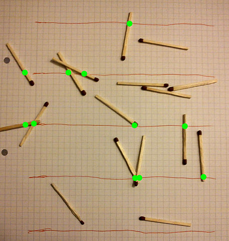

Nilai Pi (ditulis dengan huruf Yunani, π) adalah nombor tiada nisbah yang digunakan dalam geometri yang melibatkan bulatan. Nilainya boleh diperolehi dengan mengambil nilai ukurlilit bulat lalu dibahagikan dengan kelebarannya (diameter). Nombor perpuluhan pi tiada berkesudahan tapi cukup untuk kita menggunakan beberapa digit pertama untuk anggaran pengiraan. 3.14159[…] adalah anggaran yang biasa digunakan untuk pelbagai kegunaan.
Menyahut Cabaran Pi
Sempena Hari Pi, peminat Matematik seluruh dunia digalakkan untuk menyahut cabaran pi. Cabaran Pi ialah satu cabaran untuk kita mengira nilai pi menggunakan mana-mana kaedah (sudah tentulah kita tak boleh tekan π di kalkulator) untuk mendapatkan nilai yang paling hampir sekali. Ini ada beberapa cara mengira pi.
\[ {\displaystyle \pi =4\sum _{n=0}^{\infty }{\cfrac {(-1)^{n}}{2n+1}}=4\left({\frac {1}{1}}-{\frac {1}{3}}+{\frac {1}{5}}-{\frac {1}{7}}+-\cdots \right)\!={\cfrac {4}{1+{\cfrac {1^{2}}{2+{\cfrac {3^{2}}{2+{\cfrac {5^{2}}{2+\ddots }}}}}}}}\!} \]
Formula Gregory–Leibniz
Disebabkan pi adalah nombor tiada nisbah, maka pengiraan adalah dengan menggunakan penjumlahan berterusan sehingga n mencapai infiniti. Formula Gregory-Leibniz senang nak faham (penyebut [ denominator ] setiap pecahan ialah nombor ganjil) untuk mengira tapi ia agak lambat untuk mencapai nilai pi yang sebenar. Maknanya, kalau pakai tangan, ianya sangat memenatkan dan membazir banyak kertas. Pelawak Matematik Matt Parker pernah cuba guna formula ini untuk Hari Pi 2016.
Membaling Damak
Pertama sekali lukis satu segi empat sama dan satu bulatan yang sama lebarnya. Kemudian, baling damak sebanyak yang mungkin. Lagi rawak balingan lagi bagus. Jumlah balingan yang kena dalam bulatan itu adalah analogi kepada ruang bulatan dan begitu juga dengan segi empat sama. Bahagikan jumlah damak dalam bulatan dengan jumlah damak dalam segi empat sama akan mendapat π/4. Mari lihat Dianna Cowern (PhysicsGirl) dan Derek Muller (Veritasium) mencari nilai pi dengan kaedah ini.
Permasalahan Jarum oleh Buffon

Permasalahan Jarum Buffon. (Imej milik McZusatz, lesen CC BY SA 3.0)
{kind=link}
Kaedah ini agak menarik sebab ia nampak macam langsung tidak ada kena mengena dengan bulatan tapi matematik di sebaliknya agak rumit tapi pengiraannya senang. Pertama sekali, lukis beberapa garis selari di atas lantai lalu campak seberapa banyak batang lurus ke atas lantai secara rawak. Nilai pi akan berkadaran songsang dengan kemungkinan batang untuk berada di atas garisan selari. Rujuk ke sini untuk pengiraan.
Kesimpulan
Ada banyak lagi kaedah yang boleh digunakan untuk mengira nilai pi. Ini baru sedikit.
Kepada sesiapa yang menyahut cabaran pi, marilah berkongsi dengan kami kaedah dan nilai yang kalian dapat!
Nota Kaki
Untuk mengetahui sejarah perjalanan nilai pi, baca artikel ini daripada MajalahSains.